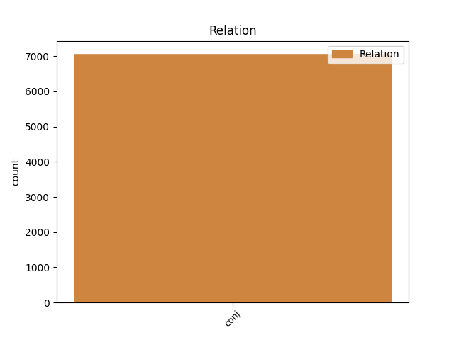
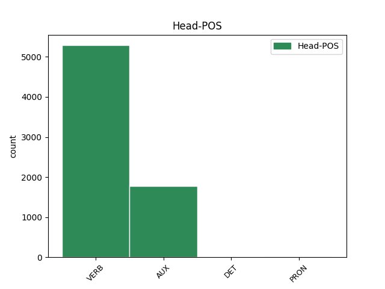
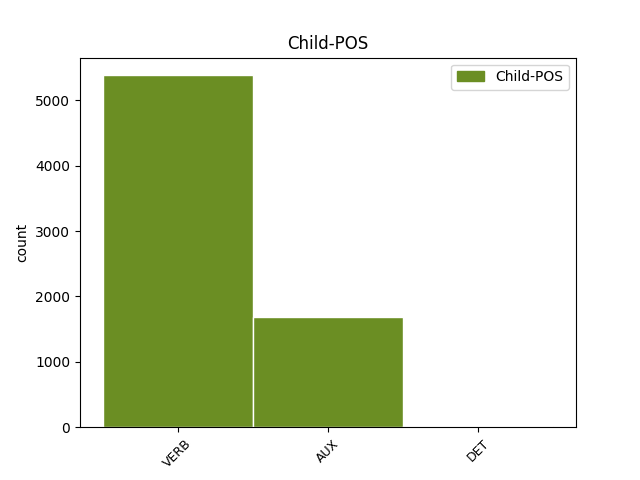

Distribution of features within this leaf



Agreement Rules sorted by frequency.
- When the dependent token is the conjunct(conj) of the head token, and the dependent token is VERB.
1 Teller _ _ _ _ 0 _ _ _
2 se _ _ _ _ 0 _ _ _
3 bránil _ _ _ _ 0 _ _ _
4 charakteristickým _ _ _ _ 0 _ _ _
5 způsobem _ _ _ _ 0 _ _ _
6 : _ _ _ _ 0 _ _ _
7 " _ _ _ _ 0 _ _ _
8 Každý _ _ _ _ 0 _ _ _
9 kojenec _ _ _ _ 0 _ _ _
10 se _ _ _ _ 0 _ _ _
11 dá dát VERB VB-S---3P-AA--- Mood=Ind|Number=Sing|Person=3|Polarity=Pos|Tense=Pres|VerbForm=Fin|Voice=Act 0 _ _ _
12 jednou _ _ _ _ 0 _ _ _
13 zneužít _ _ _ _ 0 _ _ _
14 pro _ _ _ _ 0 _ _ _
15 agresívní _ _ _ _ 0 _ _ _
16 útok _ _ _ _ 0 _ _ _
17 - _ _ _ _ 0 _ _ _
18 znamená znamenat VERB VB-S---3P-AA--- Aspect=Imp|Mood=Ind|Number=Sing|Person=3|Polarity=Pos|Tense=Pres|VerbForm=Fin|Voice=Act 11 conj _ _
19 to _ _ _ _ 0 _ _ _
20 snad _ _ _ _ 0 _ _ _
21 , _ _ _ _ 0 _ _ _
22 že _ _ _ _ 0 _ _ _
23 máme _ _ _ _ 0 _ _ _
24 přestat _ _ _ _ 0 _ _ _
25 s _ _ _ _ 0 _ _ _
26 výrobou _ _ _ _ 0 _ _ _
27 dětí _ _ _ _ 0 _ _ _
28 ? _ _ _ _ 0 _ _ _
29 " _ _ _ _ 0 _ _ _
1 Ve _ _ _ _ 0 _ _ _
2 vzdálenosti _ _ _ _ 0 _ _ _
3 150 _ _ _ _ 0 _ _ _
4 miliónů _ _ _ _ 0 _ _ _
5 km _ _ _ _ 0 _ _ _
6 ( _ _ _ _ 0 _ _ _
7 ekvivalent _ _ _ _ 0 _ _ _
8 vzdálenosti _ _ _ _ 0 _ _ _
9 Slunce _ _ _ _ 0 _ _ _
10 - _ _ _ _ 0 _ _ _
11 Země _ _ _ _ 0 _ _ _
12 ) _ _ _ _ 0 _ _ _
13 stačí stačit VERB VB-S---3P-AA--- Aspect=Imp|Mood=Ind|Number=Sing|Person=3|Polarity=Pos|Tense=Pres|VerbForm=Fin|Voice=Act 0 _ _ _
14 na _ _ _ _ 0 _ _ _
15 udělení _ _ _ _ 0 _ _ _
16 postačující _ _ _ _ 0 _ _ _
17 příčné _ _ _ _ 0 _ _ _
18 složky _ _ _ _ 0 _ _ _
19 rychlosti _ _ _ _ 0 _ _ _
20 asi _ _ _ _ 0 _ _ _
21 1 _ _ _ _ 0 _ _ _
22 Mt _ _ _ _ 0 _ _ _
23 TNT _ _ _ _ 0 _ _ _
24 , _ _ _ _ 0 _ _ _
25 ale _ _ _ _ 0 _ _ _
26 k _ _ _ _ 0 _ _ _
27 tomu _ _ _ _ 0 _ _ _
28 je být AUX VB-S---3P-AA--- Mood=Ind|Number=Sing|Person=3|Polarity=Pos|Tense=Pres|VerbForm=Fin|Voice=Act 13 conj _ _
29 třeba _ _ _ _ 0 _ _ _
30 připočítat _ _ _ _ 0 _ _ _
31 další _ _ _ _ 0 _ _ _
32 nemalou _ _ _ _ 0 _ _ _
33 energii _ _ _ _ 0 _ _ _
34 potřebnou _ _ _ _ 0 _ _ _
35 pro _ _ _ _ 0 _ _ _
36 rozbití _ _ _ _ 0 _ _ _
37 planetky _ _ _ _ 0 _ _ _
38 či _ _ _ _ 0 _ _ _
39 jádra _ _ _ _ 0 _ _ _
40 komety _ _ _ _ 0 _ _ _
41 na _ _ _ _ 0 _ _ _
42 dva _ _ _ _ 0 _ _ _
43 kusy _ _ _ _ 0 _ _ _
44 . _ _ _ _ 0 _ _ _
1 Svůj _ _ _ _ 0 _ _ _
2 versus _ _ _ _ 0 _ _ _
3 jeho _ _ _ _ 0 _ _ _
4 , _ _ _ _ 0 _ _ _
5 její jeho DET PSZS1FS3------- Case=Nom|Gender=Masc,Neut|Gender[psor]=Fem|Number=Sing|Number[psor]=Sing|Person=3|Poss=Yes|PronType=Prs 0 _ _ _
6 , _ _ _ _ 0 _ _ _
7 jejich jeho DET PSXXXXP3------- Number[psor]=Plur|Person=3|Poss=Yes|PronType=Prs 5 conj _ LGloss=(přivlast.)
8 57 _ _ _ _ 0 _ _ _
Disagree Examples:
1 V _ _ _ _ 0 _ _ _
2 kratších _ _ _ _ 0 _ _ _
3 délkách _ _ _ _ 0 _ _ _
4 je být AUX VB-S---3P-AA--- Mood=Ind|Number=Sing|Person=3|Polarity=Pos|Tense=Pres|VerbForm=Fin|Voice=Act 0 _ _ _
5 asi _ _ _ _ 0 _ _ _
6 o _ _ _ _ 0 _ _ _
7 30 _ _ _ _ 0 _ _ _
8 % _ _ _ _ 0 _ _ _
9 dražší _ _ _ _ 0 _ _ _
10 , _ _ _ _ 0 _ _ _
11 a _ _ _ _ 0 _ _ _
12 proto _ _ _ _ 0 _ _ _
13 se _ _ _ _ 0 _ _ _
14 při _ _ _ _ 0 _ _ _
15 nákupu _ _ _ _ 0 _ _ _
16 faxovacího _ _ _ _ 0 _ _ _
17 přístroje _ _ _ _ 0 _ _ _
18 zajímejte zajímat VERB Vi-P---2--A---- Aspect=Imp|Mood=Imp|Number=Plur|Person=2|Polarity=Pos|VerbForm=Fin 4 conj _ _
19 i _ _ _ _ 0 _ _ _
20 o _ _ _ _ 0 _ _ _
21 to _ _ _ _ 0 _ _ _
22 , _ _ _ _ 0 _ _ _
23 jakou _ _ _ _ 0 _ _ _
24 délku _ _ _ _ 0 _ _ _
25 papíru _ _ _ _ 0 _ _ _
26 používá _ _ _ _ 0 _ _ _
27 . _ _ _ _ 0 _ _ _
1 Jeden _ _ _ _ 0 _ _ _
2 arch _ _ _ _ 0 _ _ _
3 takového _ _ _ _ 0 _ _ _
4 papíru _ _ _ _ 0 _ _ _
5 stojí stát VERB VB-S---3P-AA--- Mood=Ind|Number=Sing|Person=3|Polarity=Pos|Tense=Pres|VerbForm=Fin|Voice=Act 0 _ _ _
6 necelých _ _ _ _ 0 _ _ _
7 dvacet _ _ _ _ 0 _ _ _
8 haléřů _ _ _ _ 0 _ _ _
9 , _ _ _ _ 0 _ _ _
10 ale _ _ _ _ 0 _ _ _
11 zase _ _ _ _ 0 _ _ _
12 musíte muset VERB VB-P---2P-AA--- Mood=Ind|Number=Plur|Person=2|Polarity=Pos|Tense=Pres|VerbForm=Fin|Voice=Act 5 conj _ _
13 počítat _ _ _ _ 0 _ _ _
14 s _ _ _ _ 0 _ _ _
15 tím _ _ _ _ 0 _ _ _
16 , _ _ _ _ 0 _ _ _
17 že _ _ _ _ 0 _ _ _
18 jedna _ _ _ _ 0 _ _ _
19 vložka _ _ _ _ 0 _ _ _
20 do _ _ _ _ 0 _ _ _
21 tiskárny _ _ _ _ 0 _ _ _
22 INK _ _ _ _ 0 _ _ _
23 JET _ _ _ _ 0 _ _ _
24 , _ _ _ _ 0 _ _ _
25 s _ _ _ _ 0 _ _ _
26 náplní _ _ _ _ 0 _ _ _
27 na _ _ _ _ 0 _ _ _
28 vytištění _ _ _ _ 0 _ _ _
29 přibližně _ _ _ _ 0 _ _ _
30 3000 _ _ _ _ 0 _ _ _
31 stran _ _ _ _ 0 _ _ _
32 , _ _ _ _ 0 _ _ _
33 stojí _ _ _ _ 0 _ _ _
34 od _ _ _ _ 0 _ _ _
35 1000 _ _ _ _ 0 _ _ _
36 Kč _ _ _ _ 0 _ _ _
37 výše _ _ _ _ 0 _ _ _
38 . _ _ _ _ 0 _ _ _
1 Pokud _ _ _ _ 0 _ _ _
2 jde _ _ _ _ 0 _ _ _
3 o _ _ _ _ 0 _ _ _
4 přímý _ _ _ _ 0 _ _ _
5 vliv _ _ _ _ 0 _ _ _
6 , _ _ _ _ 0 _ _ _
7 nemusel _ _ _ _ 0 _ _ _
8 by _ _ _ _ 0 _ _ _
9 být _ _ _ _ 0 _ _ _
10 až _ _ _ _ 0 _ _ _
11 tak _ _ _ _ 0 _ _ _
12 velký _ _ _ _ 0 _ _ _
13 , _ _ _ _ 0 _ _ _
14 protože _ _ _ _ 0 _ _ _
15 pobočka _ _ _ _ 0 _ _ _
16 je být AUX VB-S---3P-AA--- Mood=Ind|Number=Sing|Person=3|Polarity=Pos|Tense=Pres|VerbForm=Fin|Voice=Act 0 _ _ _
17 zaběhlá _ _ _ _ 0 _ _ _
18 a _ _ _ _ 0 _ _ _
19 růst _ _ _ _ 0 _ _ _
20 nákladů _ _ _ _ 0 _ _ _
21 vidím vidět VERB VB-S---1P-AA--- Mood=Ind|Number=Sing|Person=1|Polarity=Pos|Tense=Pres|VerbForm=Fin|Voice=Act 16 conj _ _
22 asi _ _ _ _ 0 _ _ _
23 jen _ _ _ _ 0 _ _ _
24 ve _ _ _ _ 0 _ _ _
25 mzdách _ _ _ _ 0 _ _ _
26 , _ _ _ _ 0 _ _ _
27 které _ _ _ _ 0 _ _ _
28 by _ _ _ _ 0 _ _ _
29 se _ _ _ _ 0 _ _ _
30 měly _ _ _ _ 0 _ _ _
31 vyvíjet _ _ _ _ 0 _ _ _
32 s _ _ _ _ 0 _ _ _
33 ohledem _ _ _ _ 0 _ _ _
34 na _ _ _ _ 0 _ _ _
35 inflaci _ _ _ _ 0 _ _ _
36 . _ _ _ _ 0 _ _ _
1 Jedna _ _ _ _ 0 _ _ _
2 věc _ _ _ _ 0 _ _ _
3 je být AUX VB-S---3P-AA--- Mood=Ind|Number=Sing|Person=3|Polarity=Pos|Tense=Pres|VerbForm=Fin|Voice=Act 0 _ _ _
4 očividná _ _ _ _ 0 _ _ _
5 : _ _ _ _ 0 _ _ _
6 Žatecko _ _ _ _ 0 _ _ _
7 je _ _ _ _ 0 _ _ _
8 výrazným _ _ _ _ 0 _ _ _
9 agrárním _ _ _ _ 0 _ _ _
10 regionem _ _ _ _ 0 _ _ _
11 a _ _ _ _ 0 _ _ _
12 v _ _ _ _ 0 _ _ _
13 jaké _ _ _ _ 0 _ _ _
14 finanční _ _ _ _ 0 _ _ _
15 situaci _ _ _ _ 0 _ _ _
16 jsou _ _ _ _ 0 _ _ _
17 státní _ _ _ _ 0 _ _ _
18 statky _ _ _ _ 0 _ _ _
19 a _ _ _ _ 0 _ _ _
20 podnikatelé _ _ _ _ 0 _ _ _
21 v _ _ _ _ 0 _ _ _
22 zemědělství _ _ _ _ 0 _ _ _
23 vůbec _ _ _ _ 0 _ _ _
24 , _ _ _ _ 0 _ _ _
25 to _ _ _ _ 0 _ _ _
26 snad _ _ _ _ 0 _ _ _
27 nemusím muset VERB VB-S---1P-NA--- Mood=Ind|Number=Sing|Person=1|Polarity=Neg|Tense=Pres|VerbForm=Fin|Voice=Act 3 conj _ _
28 tady _ _ _ _ 0 _ _ _
29 rozvádět _ _ _ _ 0 _ _ _
30 . _ _ _ _ 0 _ _ _
1 S _ _ _ _ 0 _ _ _
2 nimi _ _ _ _ 0 _ _ _
3 uzavřeme _ _ _ _ 0 _ _ _
4 jasný _ _ _ _ 0 _ _ _
5 kontrakt _ _ _ _ 0 _ _ _
6 , _ _ _ _ 0 _ _ _
7 v _ _ _ _ 0 _ _ _
8 němž _ _ _ _ 0 _ _ _
9 budou _ _ _ _ 0 _ _ _
10 uvedeny _ _ _ _ 0 _ _ _
11 naše můj DET PSHP1-P1------- Case=Nom|Gender=Fem,Neut|Number=Plur|Number[psor]=Plur|Person=1|Poss=Yes|PronType=Prs 0 _ _ _
12 i _ _ _ _ 0 _ _ _
13 jejich jeho DET PSXXXXP3------- Number[psor]=Plur|Person=3|Poss=Yes|PronType=Prs 11 conj _ LGloss=(přivlast.)
14 povinnosti _ _ _ _ 0 _ _ _
15 . _ _ _ _ 0 _ _ _